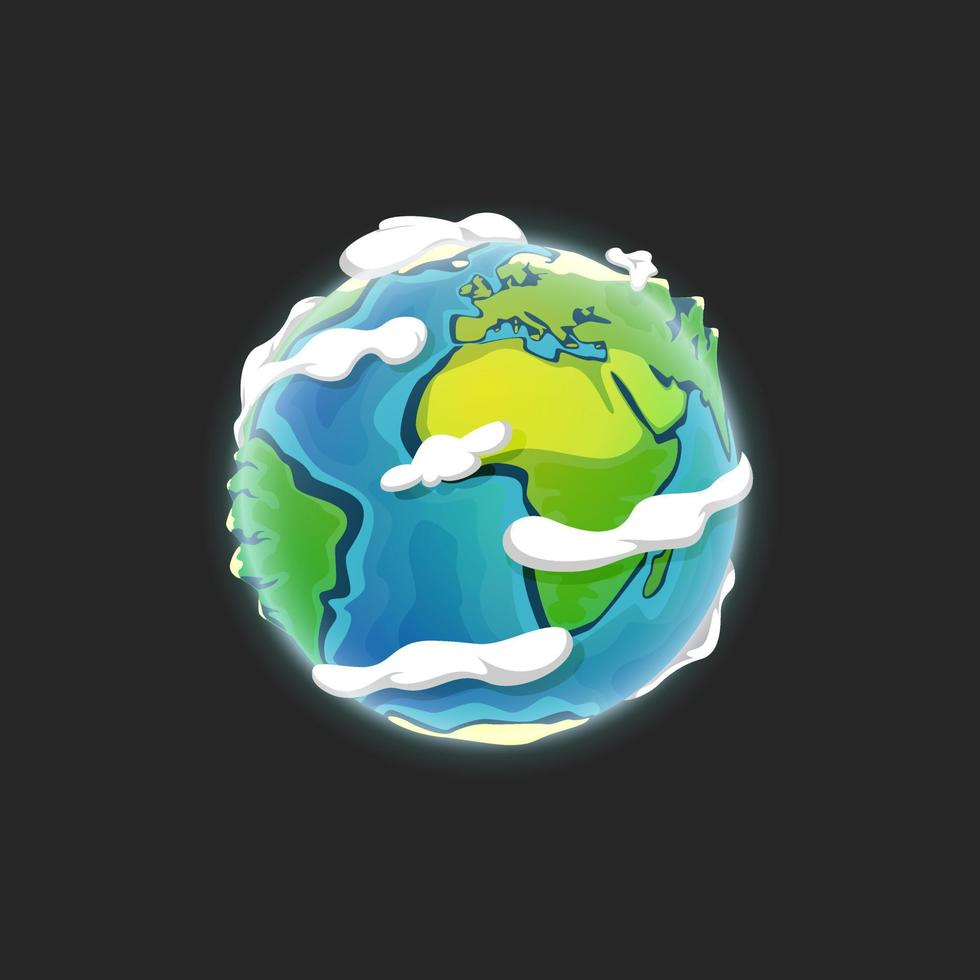
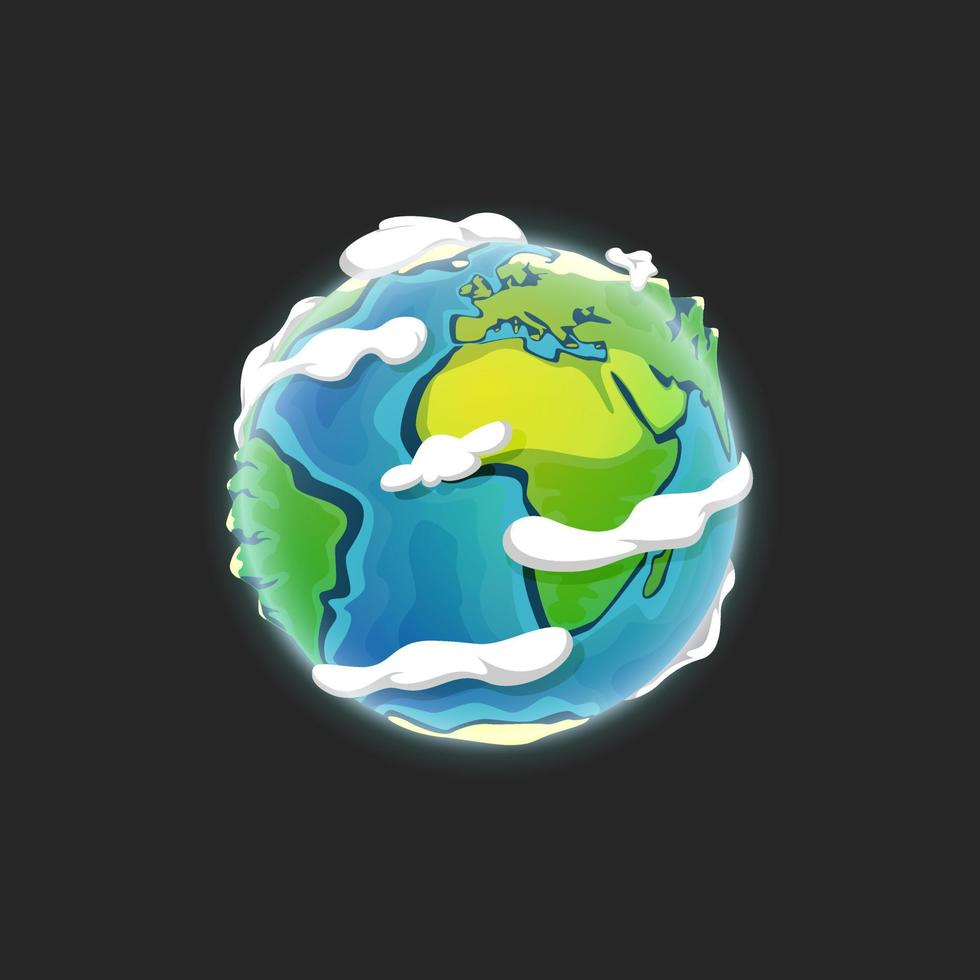
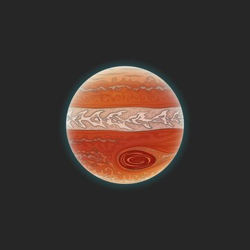
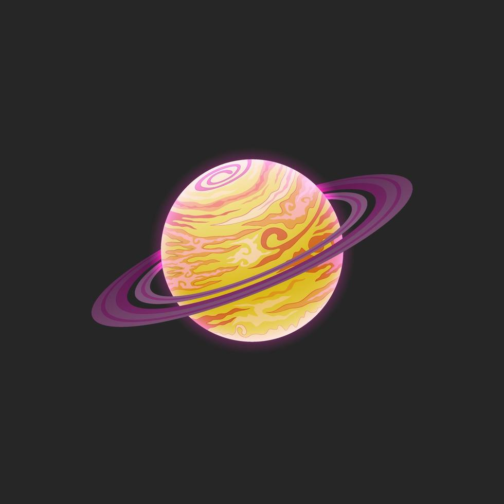
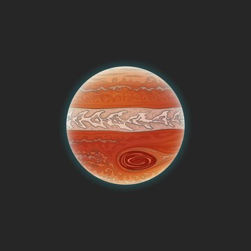
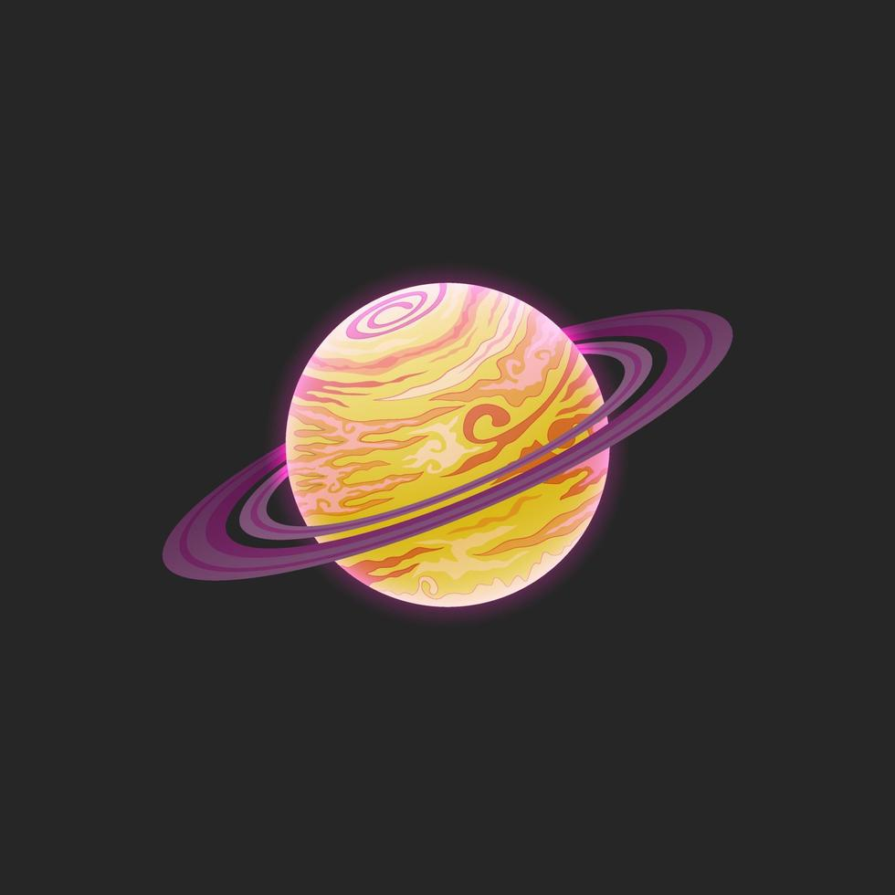
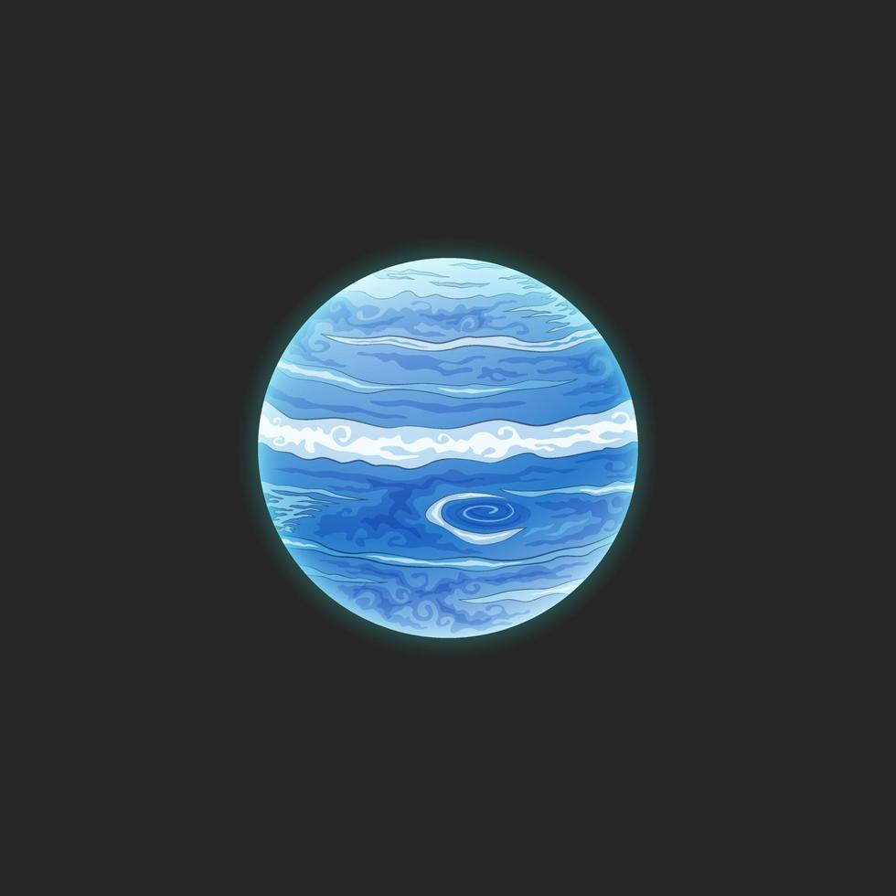
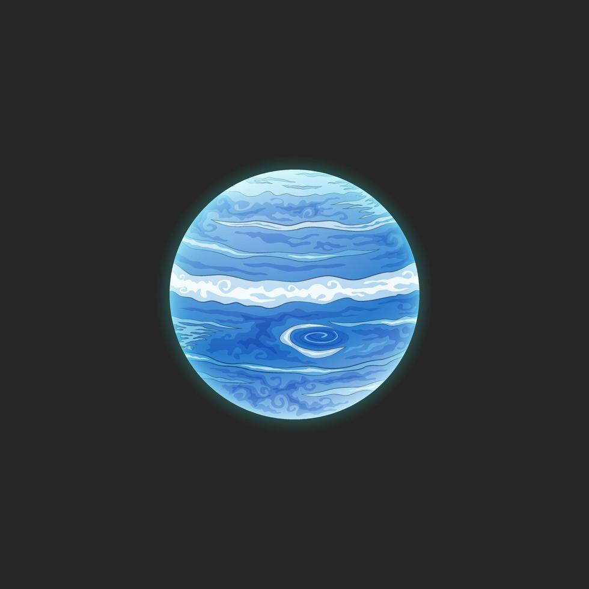
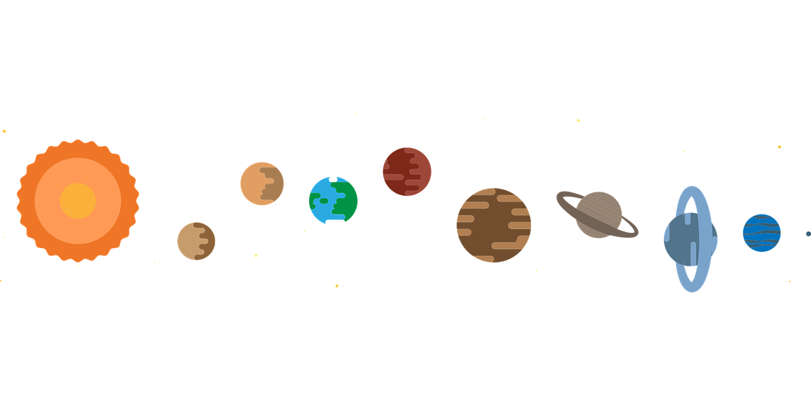

Om planetene
Planetene i solsystemet er delt inn i tre hovedkategorier: steinplaneter, gasskjemper og iskjemper. De fire innerste planetene – Merkur, Venus, Jorden og Mars – har steinete overflater og kalles terrestriske planeter. Disse er relativt små, tette og har faste overflater.
De ytre planetene – Jupiter, Saturn, Uranus og Neptun – er mye større og består hovedsakelig av gass og is. Jupiter og Saturn regnes som gasskjemper, mens Uranus og Neptun er kjent som iskjemper. Jupiter er den største planeten og har mer masse enn alle de andre planetene til sammen.
Alle planetene roterer rundt solen i elliptiske baner, og bevegelsene deres følger Keplers lover og Newtons gravitasjonsteori. Hver planet har unike egenskaper, atmosfærer, rotasjoner og baner. Noen har mange måner, sterke magnetfelt og til og med komplekse værfenomener som stormer og kraftige vinder. Enkelte, som Saturn og Uranus, har også imponerende ringsystemer.
Utforsk planetene

 

 



 

Planetene gjennom menneskets øyne
Gjennom historien har planetene fascinert mennesker og vært gjenstand for både myter, religion og vitenskap. I antikken ble de fem synlige planetene oppkalt etter guder fra romersk mytologi, og mange kulturer så dem som vandrende stjerner med spesiell betydning. Planeter ble brukt i astrologi, tidlige kalendere og til navigasjon.
Med utviklingen av teleskopet på 1600-tallet, særlig av Galileo Galilei, begynte en ny epoke der planetene ble observert som verdener i seg selv. Galileo var den første til å se Jupiters største måner og Saturns ringer, og la grunnlaget for moderne astronomi.
I det 20. og 21. århundre har romsonder som NASAs Voyager 1 og 2, Cassini, New Horizons, og ulike Mars-rovere sendt tilbake detaljerte bilder og data om planetenes overflater, atmosfærer og måner. Slike oppdrag har gitt oss innsikt i hvordan solsystemet ble til, og hvilke kjemiske og geologiske prosesser som former planetene.
I dag utforsker vi ikke bare planetene med roboter og teleskoper, men også ved hjelp av kunstig intelligens, 3D-modeller og virtuelle simuleringer. Oppdrag planlegges for bemannede ferder til Mars, og teleskoper som James Webb gir oss ny kunnskap om eksoplaneter og planetdannelse i andre solsystemer. Vår forståelse av planetene har vokst fra ren undring til avansert forskning — og reisen er langt fra over.
Baner og rotasjon
Planetene går i elliptiske baner rundt solen, og hver har sin egen rotasjonstid. Noen, som Venus, roterer svært sakte og i motsatt retning av de fleste andre. Jupiter har den raskeste rotasjonen – en dag varer bare 10 timer!
Rotasjon og bane påvirker blant annet planetenes årstider, daglengde og værmønstre. For eksempel har Uranus så ekstrem aksehelning at den nærmest "ruller" rundt solen, noe som gir svært spesielle årstider.
Jo lenger en planet er fra solen, desto lengre tid bruker den på én runde rundt solen. Merkur bruker bare 88 dager, mens Neptun bruker over 165 jordår. Dette betyr at én neptunsk vinter kan vare i mer enn 40 jordår!
Alle planetene beveger seg i samme retning rundt solen, mot klokken sett ovenfra. Men rotasjonen rundt sin egen akse varierer kraftig: mens Jorda og Mars har døgn som ligner hverandre, roterer Venus så sakte at ett døgn der er lengre enn et helt venus-år.
Mange planeter har også små variasjoner i banen sin – kalt «baneresonans» – som oppstår i samspill med andre planeter. For eksempel er Neptun og Pluto i en 2:3-resonans, som betyr at Pluto går rundt solen to ganger for hver tredje gang Neptun gjør det, uten at de kolliderer.
